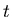
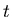
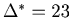
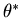

Hideaki Shimazaki and Shigeru Shinomoto
Department of Physics, Kyoto University, Kyoto 606-8502, Japan
Neural Computation Vol. 19(6) 1503-1527 (2007)
Neurophysiological studies are based upon the idea that information is transmitted between cortical neurons by spikes [Johnson, 1996,Dayan and Abbott, 2001]. A number of filtering algorithms have been proposed for estimating the instantaneous activity of an individual neuron or the joint activity of multiple neurons [DiMatteo et al., 2001,Wiener and Richmond, 2002,Sanger, 2002,Kass et al., 2003,Brockwell et al., 2004,Kass et al., 2005,Brown et al., 2004]. The most basic and frequently used tool for spike-rate estimation is the time-histogram method. For instance, one aligns spike sequences at the onset of stimuli repeatedly applied to an animal, and describes the response of a single neuron with a peri-stimulus time histogram (PSTH) or the responses of multiple neurons with a joint PSTH [Adrian, 1928,Gerstein and Kiang, 1960,Gerstein and Perkel, 1969,Abeles, 1982].
The shape of a PSTH is largely dependent on the choice of the bin size. With a bin size that is too large, one cannot represent the time-dependent spike rate. On the other hand, with a bin size that is too small, the time histogram fluctuates largely and one cannot discern the underlying spike rate. There is an appropriate bin size for each set of spike sequences, which is based on the goodness of the fit of the PSTH to the underlying spike rate. For most previously published PSTHs, however, the bin size has been subjectively selected by the authors.
For data points distributed compactly, there are classical theories about how the optimal bin size scales with the total number of data points . It was proven that the optimal bin size scales as with regard to the bar-graph-density estimator [Révész, 1968,Scott, 1979]. It was recently found that for two types of infinitely long spike sequences, whose rates fluctuate either smoothly or jaggedly, the optimal bin sizes exhibit different scaling relations with respect to the number of sequences, time scale, and amplitude of rate modulation [Koyama and Shinomoto, 2004].
Though interesting, the scaling relations are valid only for a large amount of data, and are of limited use in selecting a bin size. We devised a method of selecting the bin size of a time histogram from the spike data. In the course of our study, we realized that a theory on the empirical choice of the histogram bin size for a probability density function was presented by Rudemo in 1982 (Scandinavian Journal of Statistics 9: 65-78). Although applicable to a Poisson point process, this theory appears to have rarely been used by neurophysiologists in the analyses of PSTHs. In the actual procedure of neurophysiological experiments, the number of trials (spike sequences) plays an important role in determining the resolution of a PSTH and thus in designing experiments. Therefore it is preferable to have a theory that accords with the common protocol of neurophysiological experiments in which a stimulus is repeated to extract a signal from a neuron. Given a set of experimental data, we wish to not only determine the optimal bin size, but also estimate how many more experimental trials should be performed in order to obtain a resolution we deem sufficient.
For a small number of spike sequences derived from a modestly fluctuating rate, the estimated optimal bin size may diverge, implying that by constructing a PSTH, it is likely that one obtains spurious results for the spike-rate estimation [Koyama and Shinomoto, 2004]. Because a shortage of data underlies this divergence, one can carry out more experiments to obtain a reliable rate estimation. Our method can suggest how many sequences should be added in order to obtain a meaningful time histogram with the required accuracy. As an application of this method, we also show that the scaling relations of the optimal bin size that appears for a large number of spike sequences can be examined from a relatively small amount of data. The degree of the smoothness of an underlying rate process can be estimated by this method. In addition to a bar-graph (piecewise constant) time histogram, we also designed a method for creating a line-graph (piecewise linear) time histogram, which is superior to a bar-graph in the goodness of the fit to the underlying spike rate and in comparing multiple responses to different stimulus conditions.
These empirical methods for the bin size selection for a bar- and a line-graph histogram, estimation of the number of sequences required for the histogram, and estimation of the scaling exponents of the optimal bin size were corroborated by theoretical analysis derived for a generic stochastic rate process. In the next section, we develop the bar-graph (peri-stimulus) time histogram (Bar-PSTH) method, which is the most frequently used PSTH. In Appendix, we develop the line-graph (peri-stimulus) time histogram (Line-PSTH) method.
We consider sequences of spikes repeatedly recorded from a single neuron under identical experimental conditions. A recent analysis revealed that in vivo spike trains are not simply random, but possess inter-spike-interval distributions intrinsic and specific to individual neurons [Shinomoto et al., 2003,Shinomoto et al., 2005]. However, spikes accumulated from a large number of spike trains are in the majority mutually independent, and can be regarded as being derived from a time-dependent Poisson point process [Snyder, 1975,Daley and Vere-Jones, 1988,Kass et al., 2005].
It would be natural to assess the goodness of the fit of the estimator
to the underlying spike rate over the total observation period by the mean integrated squared error (MISE),
A bar-graph time histogram is constructed simply by counting the number of spikes that belong to each bin of width .
For an observation period , we obtain
 intervals.
The number of spikes accumulated from all sequences in the
intervals.
The number of spikes accumulated from all sequences in the  th interval is counted as .
The bar height at the
th interval is counted as .
The bar height at the  th bin is given as
.
Figure 1 shows the schematic diagram for the construction of a bar-graph time histogram.
th bin is given as
.
Figure 1 shows the schematic diagram for the construction of a bar-graph time histogram.
Given a bin of width , the expected height of a bar graph for
is the time-averaged rate,
| (2) |
By segmenting the total observation period into intervals of size , the MISE defined in Eq. 1 can be rewritten as
| (5) |
The MISE can be decomposed into two parts,
The second term of Eq. 6 can further be decomposed into two parts,
Due to the assumed Poisson nature of the point process, the number of spikes counted in each bin obeys a Poisson distribution; the variance of is equal to the mean.
For the estimated rate defined as
, this variance-mean relation corresponds to
Algorithm 1: A method for bin size selection for a Bar-PSTH
width

With the method developed in the preceding subsection, we can determine the optimal bin size for a given set of experimental data. In this section, we develop a method to estimate how the optimal bin size decreases when more experimental trials are added to the data set: Given sequences, the method provides the cost function for sequences.
Assume that we are in possession of spike sequences.
The fluctuation of the expected mean rate
in Eq. 10 is replaced with the empirical fluctuation of the time histogram
using the decomposition rule for the unbiased estimator satisfying
,
| (16) |
Algorithm 2: A method for extrapolating the cost function for a Bar-PSTH
width

It may come to pass that the original cost function computed for spike sequences does not have a minimum, or have a minimum at a bin size comparable to the observation period .
Because of the paucity of data, one may consider carrying out more experiments to obtain a reliable rate estimation.
The critical number of sequences  above which the cost function has a finite bin size
above which the cost function has a finite bin size  may be estimated in the following manner.
With a large , the cost function can be expanded as
may be estimated in the following manner.
With a large , the cost function can be expanded as
In the opposite extreme, with a sufficiently large number of spike sequences, our method selects a small bin size. It is known that the optimal bin size exhibits a power-law scaling with respect to the number of sequences . The exponent of the scaling relation depends on the smoothness of the underlying rate [Koyama and Shinomoto, 2004]. Given a large number of spike sequences, the presently developed method for extrapolating the cost function can also be utilized to estimate the optimal bin size for a larger number of spike sequence , and further estimate the scaling exponent representing the smoothness of the underlying rate.
To verify the above mentioned empirical methods, we obtain the `theoretical' cost function of a Bar-PSTH directly from a process with a known underlying rate. Note that this theoretical cost function is not available in real experimental conditions in which the underlying rate is not known.
The present estimator
is a uniformly minimum variance unbiased estimator (UMVUE) of , which achieves the lower bound of the Cramér-Rao inequality [Blahut, 1987,Cover and Thomas, 1991],
| (23) |
The cost function with a large bin size can be rewritten as
Based on the same theoretical cost function Eq. 22, we can also derive scaling relations of the optimal bin size, which is achievable with a large number of spike sequences.
With a small , the correlation of rate fluctuation can be expanded as
, and we obtain an expansion of Eq. 22 with respect to ,
The optimal bin size  is obtained from
. For a rate that fluctuates smoothly in time, the correlation function is a smooth function of , resulting in due to the symmetry
. In this case, we obtain the scaling relation
is obtained from
. For a rate that fluctuates smoothly in time, the correlation function is a smooth function of , resulting in due to the symmetry
. In this case, we obtain the scaling relation
For a rate that fluctuates in a zigzag pattern, in which the correlation of rate fluctuation has a cusp at (
, we obtain the scaling relation
The scaling relations Eq. 28 and Eq. 29 are the generalization of the ones found in Koyama & Shinomoto (2004) for two specific time-dependent Poisson processes.
In this section, we apply the presently developed methods for the bar-graph (peri-stimulus) time histogram (Bar-PSTH) and the line-graph (peri-stimulus) time histogram (Line-PSTH) to (1) spike sequences (point events) generated by the simulations of time dependent Poisson processes and (2) spike sequences recorded from a neuron in area MT. The methods for a Line-PSTH are summarized in Appendix.
We applied the method for estimating the optimal bin size of a Bar-PSTH to a set of spike sequences derived from a time-dependent Poisson process. Figure 2A shows the `empirical' cost function computed from a set of spike sequences. The empirical cost function is in good agreement with the `theoretical' cost function computed from the mean spike rate and the correlation of the rate fluctuation, according to Eq. 22. In Figure 2D, a time histogram with the optimal bin size is compared with those with non-optimal bin sizes, demonstrating the effectiveness of optimizing the bin size.
The Algorithm 2 provides an estimate of how many sequences should be added for the construction of a Bar-PSTH with the resolution we deem sufficient. In this method, the cost function of sequences is obtained by modifying the original cost function, , computed from the spike count statistics of sequences of spikes. In the subsequent applications of this extrapolation method, the original cost function, , was obtained by averaging over the initial partitioning positions.
We applied this extrapolation method for a Bar-PSTH to a set of spike sequences derived from the smoothly regulated Poisson process.
Figure 3A depicts the extrapolated cost function
 for several values of , computed from a given set of spike sequences.
Figure 3B represents the dependence of an inverse optimal bin size
for several values of , computed from a given set of spike sequences.
Figure 3B represents the dependence of an inverse optimal bin size
 on .
The inverse optimal bin size,
on .
The inverse optimal bin size,
 , stays near for
, and departs from linearly with for
.
By fitting the linear function, we estimated the critical number of sequences .
In Figure 3C, the critical number of sequences estimated from a smaller or larger is compared to the theoretical value of computed from Eq. 25.
It is noteworthy that the estimated approximates the theoretical well even from a fairly small number of spike sequences, with which the estimated optimal bin size diverges.
, stays near for
, and departs from linearly with for
.
By fitting the linear function, we estimated the critical number of sequences .
In Figure 3C, the critical number of sequences estimated from a smaller or larger is compared to the theoretical value of computed from Eq. 25.
It is noteworthy that the estimated approximates the theoretical well even from a fairly small number of spike sequences, with which the estimated optimal bin size diverges.
We also constructed a method for selecting bin size of a Line-PSTH, which is summarized as `Algorithm 3' in Appendix. Figure 4 compares the optimal Bar-PSTH and the optimal Line-PSTH obtained from the same set of spike sequences, demonstrating the superiority of the Line-PSTH to the Bar-PSTH in the sense of the MISE. In addition, the Line-PSTH is suitable for the comparison of multiple time-dependent rates, as is the case for filtering methods. The extrapolation method for a Line-PSTH is summarized as `Algorithm 4' in Appendix.
With the extrapolation method for a Bar-PSTH (Algorithm 2), one can also estimate how much the optimal bin size decreases (i.e., the resolution increases) with the number of spike sequences.
Figure 5A shows log-log plots of the optimal bin sizes  versus with respect to two rate processes that fluctuate either smoothly according to the stochastic process characterized by the mean spike rate and the correlation of the rate process
or in a zigzag pattern according to the Ornstein-Uhlenbeck process characterized by the mean rate and the
correlation of the rate process
.
These plots exhibit power-law scaling relations with distinctly different scaling exponents. The estimated exponents ( for the smooth rate process and for the zigzag rate process) are close to the exponents of and that were obtained analytically as in Eqs. 28 and 29 (see also ref. Koyama & Shinomoto, 2004).
In this way, we can estimate the degree of smoothness of the underlying rate from a reasonable amount of spike data.
versus with respect to two rate processes that fluctuate either smoothly according to the stochastic process characterized by the mean spike rate and the correlation of the rate process
or in a zigzag pattern according to the Ornstein-Uhlenbeck process characterized by the mean rate and the
correlation of the rate process
.
These plots exhibit power-law scaling relations with distinctly different scaling exponents. The estimated exponents ( for the smooth rate process and for the zigzag rate process) are close to the exponents of and that were obtained analytically as in Eqs. 28 and 29 (see also ref. Koyama & Shinomoto, 2004).
In this way, we can estimate the degree of smoothness of the underlying rate from a reasonable amount of spike data.
With the extrapolation method for a Line-PSTH (Algorithm 4 in Appendix), the scaling relations for a Line-PSTH can be examined in a similar manner. Figure 5B represents the optimal bin sizes computed for two rate processes that either fluctuate smoothly or in a zigzag pattern. The estimated exponents are for the smooth rate process and for the zigzag rate process. The exponents obtained by the extrapolation method are similar to the analytically obtained exponents, and respectively (see Eqs. 41 and 42). Note that for the smoothly fluctuating rate process, the scaling relation for the Line-PSTH is , whereas the scaling relation for a Bar-PSTH is . In contrast, for the rate process that fluctuates jaggedly, the exponents of the scaling relations for both a Bar-PSTH and a Line-PSTH are .
We also applied our method for optimizing a Bar-PSTH to publicly available neuronal spike data [Britten et al., 2004]. The details of the experimental methods are described in the reference articles [Newsome et al., 1989,Britten et al., 1992]. It was reported that the neurons in area MT exhibit highly reproducible temporal responses to identical visual stimuli [Bair and Koch, 1996]. The estimation of a time-dependent rate by a PSTH is, however, sensitive to the choice of the bin size. Therefore it would be preferable that such an appraisal of the reproducibility is tested with our objective method of optimizing the bin size. To make a reliable estimate of the optimal bin size from the spike sequences of a short observation period, we took an average of the cost functions computed under different partitioning positions.
We examine here the data recorded from a neuron under the repeated application of a random dot visual stimulus with 3.2% of coherent motion (w052, nsa2004.1, Britten et al., 2004).
The method for a Bar-PSTH was applied to the data, with close attention paid to how the optimal bin size changes with the number of spike sequences sampled.
Figure 6 depicts the results for the first , the first and the total  sequences of spikes.
sequences of spikes.
The optimal bin size practically diverges ( [ms]) for the sequences, implying that with this small amount of data a discussion about the time-dependent response does not make sense, as far as we rely on the histogram method. Even in this stage, it is possible to extrapolate the cost function by means of Algorithm 2. The critical number of trials, above which the optimal bin size is finite, was estimated as . By increasing the number of spikes to , we obtained the optimal bin size [ms], implying that a discussion about the neuronal response is possible based on this amount of data. The critical number of trials estimated from this data set () is . The optimal bin size for the total sequences is  [ms]. The critical number of sequences estimated from the total sequences is .
Algorithm 1 confirms that the temporal rate modulation can be discussed with a sufficiently large number of sequences, such as or  .
With the Algorithm 2, three sets of sequences with , and suggest the critical number of sequence to be
-.
.
With the Algorithm 2, three sets of sequences with , and suggest the critical number of sequence to be
-.
We have developed a method for selecting the bin size, so that the Bar-PSTH (Section 2) or the Line-PSTH (Appendix) best represents the (unknown) underlying spike rate. The suitability of this method was demonstrated by applying it to not only model spike sequences generated by time-dependent Poisson processes, but also real spike sequences recorded from cortical area MT of a monkey.
For a small number of spike sequences derived from a modestly fluctuating rate, the cost function does not have a minimum ( for any , or has a minimum at a bin size that is comparable to the observation period , implying that the time-dependent rate can not be captured by means of the time histogram method. Our method can nevertheless extrapolate the cost function for any number of spike sequences, and suggest how many sequences should be added in order to obtain a meaningful time histogram with the resolution we require. The presently examined model data and real data illustrated that the optimal bin size may `diverge' ( ), and even under such conditions our extrapolation method works reasonably well.
In the present study, we adopted the mean integrated squared error (MISE) as measuring the goodness of the fit of a PSTH to the underlying spike rate. There were studies of the density estimation based on other standards such as the Kullback-Leibler divergence [Hall, 1990] and the Hellinger distance [Kanazawa, 1993]. To our knowledge, however, there are yet no practical algorithms based on these standards that optimize the bin size solely with raw data. It is interesting to explore practical methods based on other standards to the estimation of the time dependent rate, and compare them with the presently developed MISE criterion.
Use of regular (equal) bin size is a constraint particular to the present method. The regular histogram is suitable for stationary time-dependent rates. In practical applications, however, the rate does not necessarily fluctuate in a stationary fashion, but can change abruptly during a localized period of time. In such a situation, a histogram with variable bin width can better fit to the underlying rate than a regular histogram can. In order to make a better estimate of the underlying rate in the sense of the MISE, it is desirable to develop an adaptive method that adjusts the bin size over time. It is also desirable to develop the present optimization method for the Bar-PSTH and the Line-PSTH into a method for higher order spline fittings that can be compared with filtering methods. Nevertheless, as long as the Bar-PSTHs or the Line-PSTHs are used as conventional rate-estimation tools, the present method for selecting the bin size should be used for their construction.
The authors thank Shinsuke Koyama, Takeaki Shimokawa and Kensuke Arai for helpful discussions. The authors also acknowledge K. H. Britten, M. N. Shadlen, W. T. Newsome, J. A. Movshon who have made their data available to the public. This study is supported in part by Grants-in-Aid for Scientific Research to SS from the Ministry of Education, Culture, Sports, Science and Technology of Japan (16300068, 18020015) and the 21st Century COE ``Center for Diversity and Universality in Physics". HS is supported by the Research Fellowship of the Japan Society for the Promotion of Science for Young Scientists.
A line graph can be constructed by simply connecting top-centers of adjacent bar graphs of the height . Figure 7 schematically shows the construction of a line-graph time histogram. For the same set of spike sequences, the optimal bin size (window size) of a Line-PSTH is, however, different from that of a Bar-PSTH. We develop here a method for selecting the bin size for a Line-PSTH.
The expected heights of adjacent bar graphs for intervals of and  are
are
The time average of the MISE (Eq. 1) is rewritten by the average over the segmented rates,
| (32) |
The first term of Eq. 33 is the stochastic fluctuation of the empirical linear estimator due to the stochastic point events, which can be computed as
| (34) |
The second term of Eq. 33 is the temporal fluctuation of around the expected linear estimator .
We expands the second term by inserting
, and obtain
The first term of Eq. 35 represents a mean squared fluctuation of the underlying rate, and is independent of the choice of the bin size (See Eq. 8).
We introduce the cost function by subtracting the variance of the underlying rate from the original MISE:
The first term of Eq. 36 can be estimated from the data, using the variance-mean relation (Eq. 12).
The last four terms of Eq. 36 are the covariances of the expected rates
, and , which are not observables. We can estimate them by using the covariance decomposition rule for unbiased estimators:
Algorithm 3: A method for bin size selection for a Line-PSTH
width
As in the case of the Bar-PSTH, the cost function for any sequences of spike trains can be extrapolated using the variance-mean relation for the Poisson statistics,
| (38) |
Algorithm 4: A method for extrapolating the cost function for a Line-PSTH
width
We can obtain a `theoretical' cost function of a Line-PSTH directly from the mean spike rate and the correlation of the rate fluctuation.
According to the mean-variance relation based on the Cramér-Rao (in)equality (Eq. 21), the cost function (Eq. 36) is given by
(40)
Unlike the Bar-PSTH, the line graph successfully approximates the original rate to first order in , and therefore the term in the cost function vanishes for a Line-PSTH.
The optimal bin size  is obtained from
. For a rate process that fluctuates smoothly in time, the correlation function is a smooth function, resulting in and
due to the symmetry
, and we obtain the scaling relation
is obtained from
. For a rate process that fluctuates smoothly in time, the correlation function is a smooth function, resulting in and
due to the symmetry
, and we obtain the scaling relation
If the correlation of rate fluctuation has a cusp at (
, we obtain the scaling relation